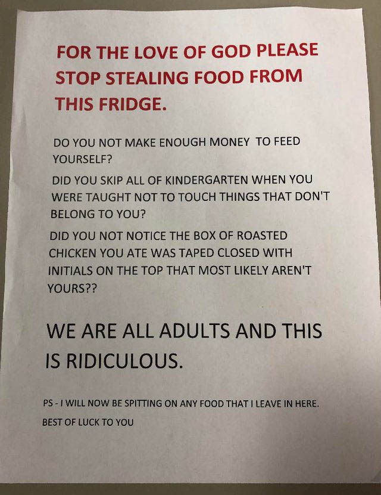

Frequently people use all caps when they want to make their text stand out. You’ve surely seen a sign at work or on campus yelling something at you in all caps, like the image on the right. The sad thing about these messages is that using all caps actually makes a document harder to read.
Watch the LinkedIn Learning video “Avoid All Caps and Underlined Text” to find out why caps are harder to read and learn some useful alternatives you can use in your documents.

The video is free with your VT login. Follow these instructions to login.